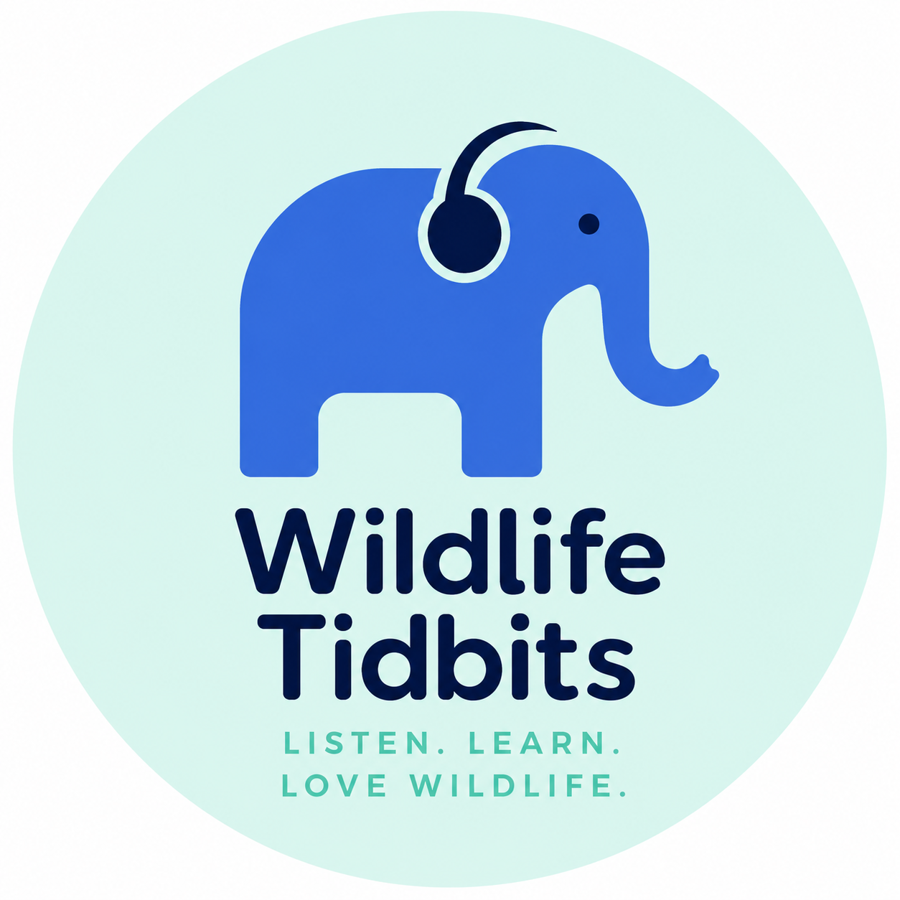

Fun, science-backed animal facts from a conservation biologist. Each week, one surprising tidbit, unpacked in just a few minutes — for anyone who’s ever wondered how an animal does what it does.
Audra earned her Ph.D. in Biology at UCLA as a National Science Foundation Fellow, studying how inbreeding affects wild populations. Her research on Southern California mountain lions documented severe infertility and physical abnormalities, showing how highways and urban sprawl were trapping cougars on a path toward genetic extinction. The work made national news and helped make the case for wildlife crossings.
Before UCLA, she was a two-time fellow at the Smithsonian Conservation Biology Institute and earned her M.S. at the University of Michigan. Today she also leads product at an AI company — and still can’t stop talking about animals. Wildlife Tidbits is where that goes.
Short enough for a commute or a coffee break, every single week.
Every tidbit is researched and checked, then explained without the jargon.
The more you know about an animal, the more you want to protect it.
Suggest a tidbit, or just say hello.